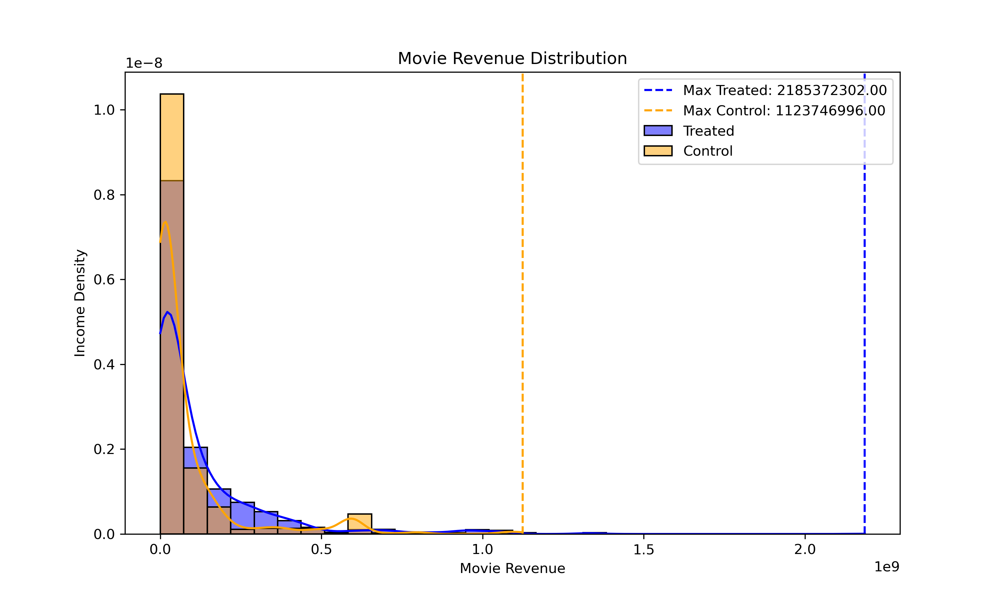

Go Broke, Really? What the data say...
Introduction
Does diversity drive box office success? To answer this, we explored the relationship between diversity and movie revenue through a step-by-step analysis—starting with a naive comparison, accounting for confounding factors through dataset balancing, and testing robustness with a sensitivity analysis.

Movie's Proportion

Naive analysis
We started by performing a naive analysis. We split the movie dataset into two equal datasets: a diverse dataset (diversity score above median diversity score) and a non-diverse dataset. We then looked at their revenue. The data reveals that diverse movies generate significantly higher revenue compared to non-diverse movies across multiple metrics, including average revenue, maximum revenue, and median revenue. Diverse movies have an average box office revenue of $117.4 million, which is nearly 33% higher than the $88.3 million average for non-diverse movies. Additionally, the top-performing diverse movie grossed $2.78 billion, more than twice the maximum revenue of $1.12 billion for non-diverse movies. The higher median and 75th percentile revenues further indicate that diverse movies tend to perform better not just at the extremes but consistently across the dataset. Moreover, a Pearson correlation coefficient of 0.1198 with a P-value of 3.28e-80 indicates a weak yet statistically significant positive correlation between diversity and revenue. While the correlation strength is low, the extremely small P-value confirms that this relationship is not due to random chance.
Imbalanced datasets?
But hold on a minute, you might say... ‘’it’s just that there’s more diversity nowadays! And today’s movies make more money. Checkmate wokebros’’. If you say that, you’re right, you’re pointing to the fact other factors such as the release date impact the probability of being diverse vs non-diverse. Therefore, if other factors diverge between the datasets, we won’t be able to know which of the varied factors actually influence the movie revenue.
We identified some factors that might differ and might impact revenue:
We observe that the diverse dataset (treated) contains more movies with more than one language and more movies with more than one country than the non-diverse dataset (control). It contains slightly more recent movies and also it has more English movies(12356 vs 12236). We therefore balanced the datasets by using propensity matching. We computed the probability of being diverse knowing the other factors. Then we matched samples to construct datasets that are identical in everything except diversity score.
Movie Revenue Distribution

Rebalanced datasets
But hold on a minute, you might say... ‘’it’s just that there’s more diversity nowadays! And today’s movies make more money. Checkmate wokebros’’. If you say that, you’re right, you’re pointing to the fact other factors such as the release date impact the probability of being diverse vs non-diverse. Therefore, if other factors diverge between the datasets, we won’t be able to know which of the varied factors actually influence the movie revenue.
The data from the balanced dataset confirms that diverse movies continue to generate significantly higher revenue compared to non-diverse movies. For diverse movies, the average box office revenue is $117.1 million, compared to only $78.3 million for non-diverse movies, reflecting a substantial difference. Additionally, the top-performing diverse movie grossed $2.19 billion, nearly double the maximum revenue of $1.12 billion for non-diverse movies. The median revenue for diverse movies is $40.4 million, while for non-diverse movies it is much lower at $18.9 million, and the 75th percentile revenue follows a similar trend ($140.9 million for diverse movies versus $71.0 million for non-diverse movies).
The Pearson correlation coefficient of 0.1280 with a P-value of 6.63e-12 indicates a weak but statistically significant positive correlation between diversity and revenue. Despite the correlation strength being relatively low, the extremely small P-value confirms that this relationship is unlikely to be due to random chance. These results suggest that diversity remains a key factor in driving higher revenue. Diverse movies likely perform better because they resonate with a broader, global audience, who are drawn to inclusive storytelling and representation. This broader appeal enhances box office performance and gives diverse movies a competitive edge in the industry.
New Movie Revenue Distribution
Sensitivity analysis
Now you might be thinking ‘’ Fine. You eliminated the other factors in your datasets. But real life is more complicated than your data. There are other factors besides date, language, and country that could influence revenue. Sorry wokebros.’’ You’re absolutely right to be sceptical about this : We therefore performed a sensitivity analysis that evaluates how robust the observed odds ratio (2.14) is to the presence of a hypothetical unmeasured confounding factor, represented by Γ (Gamma). At Γ = 2.5, the lower bound drops below 1 to 0.85, which suggests that a confounding factor with this strength could entirely nullify the observed effect of diversity, leading to no clear difference in revenue.
This analysis highlights that while the observed odds ratio is strong, the existence of a substantial unseen factor (Γ ≥ 2.5) could alter the conclusion. We would argue that such an unseen factor does not exist. The only reasonable other factor that we could think of would be the quality of the movie. We would argue that quality is actually enhanced with a greater diversity of perspectives.
So far, what can we conclude?
Our analysis suggests that diverse movies tend to generate higher revenue compared to non-diverse ones, even after controlling for key factors like release date, language availability, and geographic distribution. While the results show consistent advantages in average, median, and top-performing revenues, the observed Pearson correlations remain weak but statistically significant.
The sensitivity analysis highlights an important nuance: a strong hypothetical unseen factor (Γ ≥ 2.5) could nullify the observed relationship. However, we argue that such a factor—if it exists—is unlikely to explain away the entire effect. For example, while movie quality could be a candidate, diversity may itself enhance quality through richer storytelling and broader appeal. In sum, while diversity appears to play a role in box office performance, the relationship is complex and warrants further investigation.
Maurice Part 1
Maurice Part 2
Matej Part 1
Matej Part 2
What can we conclude? Click Here To Know